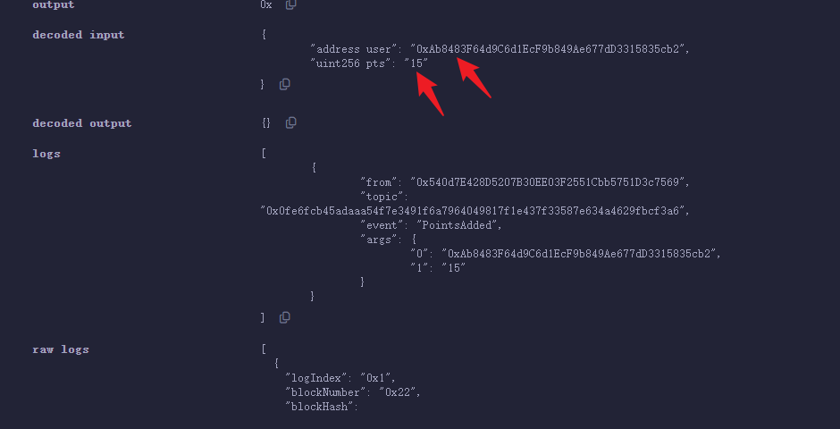
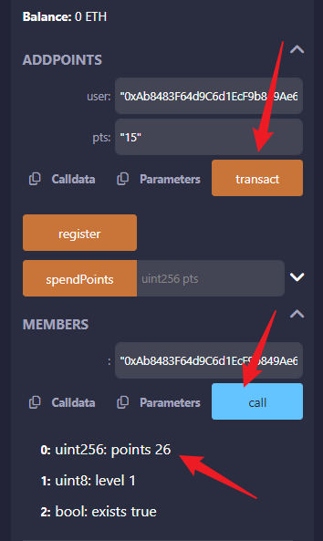
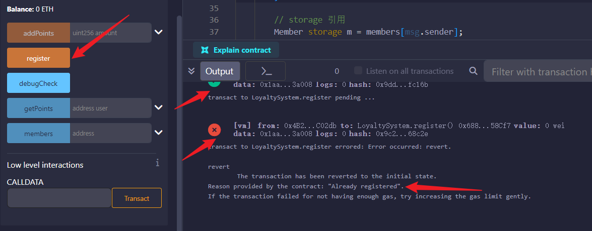

学习：
mapping, nested mapping
struct + array
枚举 enum
实践：
写一个“小型会员系统”，存储用户地址、积分、等级。
用 require/revert/assert 做条件检查。
vip.sol
1
2
3
4
5
6
7
8
9
10
11
12
13
14
15
16
17
18
19
20
21
22
23
24
25
26
27
28
29
30
31
32
33
34
35
36
37
38
39
40
41
42
43
44
45
46
47
48
49
| // SPDX-License-Identifier: MIT
pragma solidity ^0.8.20;
contract SimpleLoyalty {
struct Member {
uint256 points;
uint8 level;
bool exists;
}
mapping(address => Member) public members;
event PointsAdded(address indexed user, uint256 points);
event PointsSpent(address indexed user, uint256 points);
event LevelUp(address indexed user, uint8 newLevel);
// 注册会员
function register() external {
require(!members[msg.sender].exists, "Already registered");
members[msg.sender] = Member(0, 1, true); // 初始等级1，积分0
}
// 增加积分
function addPoints(address user, uint256 pts) external {
require(members[user].exists, "User not registered");
members[user].points += pts;
emit PointsAdded(user, pts);
// 自动升级
_checkLevelUp(user);
}
// 消耗积分
function spendPoints(uint256 pts) external {
require(members[msg.sender].exists, "Not registered");
require(members[msg.sender].points >= pts, "Not enough points");
members[msg.sender].points -= pts;
emit PointsSpent(msg.sender, pts);
}
// 内部升级逻辑
function _checkLevelUp(address user) internal {
uint8 newLevel = uint8(members[user].points / 100 + 1); // 每100积分升一级
if(newLevel > members[user].level){
members[user].level = newLevel;
emit LevelUp(user, newLevel);
}
}
}
|
第一步点击注册register


第二步点击addpoints，输入eth地址和添加的分数15

第三步，查询用户分数，输入eth地址。显示26分，用户等级1，存在该用户。

uint256 = 无符号整数，最大值非常大
问题一： 在以上代码中没有搜索到storage关键字，那么是如何永久存储会员用户的等级、积分和是否注册的呢？看起来似乎存在struct里，那么struct和storage/memory/calldata有什么区别呢？
| struct Member {
uint256 points;
uint8 level;
bool exists;
}
|
members 是 mapping，本身存储在 storage（链上状态）
在 Solidity 中，state variable（合约状态变量）默认是 storage，所以即使没有显式写 storage，它仍然是永久存储。
struct Member 只是容器，存放在 storage → 永久保存积分/等级/注册状态
vip2.sol （带 require / revert / assert）
1
2
3
4
5
6
7
8
9
10
11
12
13
14
15
16
17
18
19
20
21
22
23
24
25
26
27
28
29
30
31
32
33
34
35
36
37
38
39
40
41
42
43
44
45
46
47
48
49
50
51
52
53
54
55
56
57
58
59
60
61
62
63
64
65
66
67
68
69
| // SPDX-License-Identifier: MIT
pragma solidity ^0.8.20;
contract LoyaltySystem {
struct Member {
uint256 points;
uint8 level;
bool exists;
}
mapping(address => Member) public members;
// 自定义错误（revert 专用）
error NotRegistered();
error AlreadyRegistered();
error InvalidPoints();
// 注册
function register() external {
// require：用于正常业务逻辑检查
require(!members[msg.sender].exists, "Already registered");
members[msg.sender] = Member(0, 1, true);
}
// 加积分（使用 require + revert）
function addPoints(uint256 amount) external {
// require：最常用的检查
require(amount > 0, "Invalid points");
// revert：更 gas 省，推荐用于 "不满足条件时抛错"
if (!members[msg.sender].exists) {
revert NotRegistered();
}
// storage 引用
Member storage m = members[msg.sender];
m.points += amount;
// 升级等级逻辑（业务示例）
if (m.points >= 1000) {
m.level = 2;
}
if (m.points >= 2000) {
m.level = 3;
}
}
// 获取积分
function getPoints(address user) external view returns (uint256) {
if (!members[user].exists) revert NotRegistered();
return members[user].points;
}
// assert 用法示例（内部不变量检查）
function internalCheck() internal view {
// assert 只用于“永远不应该失败”的情况
// 例如：struct 中 exists 为 true 时 level 永远必须 >=1
if (members[msg.sender].exists) {
assert(members[msg.sender].level >= 1);
}
}
// 调用 internalCheck 的示例函数
function debugCheck() external view {
internalCheck();
}
}
|
测试
点击两次，第一次显示注册成功，第二次提示注册失败因为已经注册了。

你问的重点：require / revert / assert 使用区别
1️⃣ require — 最常用的条件检查
用于：
输入参数是否合法
用户是否注册
用户是否有权限
金额是否足够
错误信息会以 string 形式返回。
require(amount > 0, “Invalid points”);
审计视角：
“是否所有关键操作都有必要的 require 检查”
2️⃣ revert — 更专业、gas 更便宜
当逻辑复杂时，推荐使用 自定义错误 + revert：
| if (!members[msg.sender].exists) {
revert NotRegistered();
}
|
优点：
gas 消耗比 require 少 40% 以上
错误码可以精准定位，不依赖 string
审计视角：
“是否应将 require(string) 改为 revert ErrorName() 以减少 gas”
3️⃣ assert — 不应被业务触发
assert 只用于：
内部不变量（invariants）
永远不应该失败的分支
EVM bug 检查（极少用）
例如：
assert(members[msg.sender].level >= 1);
如果断言失败 → 整个交易失败，消耗所有 gas
因此不能用 assert 做输入检查！
审计视角：
“assert 是否用在了不应该使用的地方，有没有 DoS 风险”
🔍 为什么之前的合约没使用 revert / assert？
因为：
require 已经足够覆盖大部分业务逻辑
新手更容易理解
要讲解成员系统核心逻辑，不想干扰你理解
但你现在已经进入 进阶开发 / 审计思维，所以我们升级到专业写法。
enum_vip.sol
1
2
3
4
5
6
7
8
9
10
11
12
13
14
15
16
17
18
19
20
21
22
23
24
25
26
27
28
29
30
31
32
33
34
35
36
37
| pragma solidity ^0.8.20;
contract Loyalty {
enum Level { Bronze, Silver, Gold, Diamond }
struct Member {
uint256 points;
Level level;
bool exists;
}
mapping(address => Member) public members;
// 注册
function register() external {
require(!members[msg.sender].exists, "Already registered");
members[msg.sender] = Member(0, Level.Bronze, true);
}
// 加积分并自动升级
function addPoints(uint256 amount) external {
require(amount > 0, "Invalid points");
Member storage m = members[msg.sender];
require(m.exists, "Not registered");
m.points += amount;
// 自动升级逻辑
if (m.points >= 10000) {
m.level = Level.Diamond;
} else if (m.points >= 5000) {
m.level = Level.Gold;
} else if (m.points >= 1000) {
m.level = Level.Silver;
}
}
}
|

✅ 1. 什么是 enum（枚举）？
枚举（enum）是用来表示一组有限的、可读性更高的常量。
换句话说：
- 它让你的代码更容易理解
- 不需要记数字，直接用名字表示状态
- 通常用于“状态机”或“等级系统”
🧊 2. 举个简单例子
比如会员等级：
| enum Level { Bronze, Silver, Gold, Diamond }
|
这会自动映射为：
| 名称 |
数字值 |
| Bronze |
0 |
| Silver |
1 |
| Gold |
2 |
| Diamond |
3 |
这样，你就不需要记住 0/1/2/3，代码更清晰。
🧩 3. 在会员系统里如何使用？
结构体里直接放 enum：
| struct Member {
uint256 points;
Level level;
bool exists;
}
|
升级等级时：
| if (m.points >= 1000) {
m.level = Level.Silver;
} else if (m.points >= 5000) {
m.level = Level.Gold;
}
|
是不是比用数字 1, 2, 3 可读性高很多？
🔐 4. enum 还能用于“任务系统 / 状态机”
比如像 Galxe / Zealy 的任务：
| enum TaskStatus { NotStarted, InProgress, Completed, RewardClaimed }
|
⚙ 5. enum 是如何存储的？
enum 在底层是一个 uint8（如果状态数少于 256），也就是非常省 gas。
例如：
和
本质上没有区别，但可读性高得多。
⚠ 6. 审计思维：enum 的风险点
审计时会看几个点：
① 是否有 default state（默认状态）逻辑漏洞
enum 默认值是 0（第一个成员）
如果没处理这个默认值 → 漏洞风险
② 是否可能被错误升级跳级
例如 Gold 直接改成 Diamond，而中间没有检查
（状态机必须确保不可逆步骤按顺序执行）
③ 是否有 unreachable states（永远不会发生的状态）
这通常代表业务逻辑没写完整
🏁 总结一下 enum 是什么：
| 你要记住的重点 |
解释 |
| enum = 取固定值的变量 |
Bronze/Silver/Gold |
| 人类可读性高 |
替代数字 0/1/2/3 |
| 内部存储是 uint8 |
省 gas |
| 非常适合会员等级 & 状态机 |
会员、任务、订单、权限 |
| 审计会重点检查状态机 |
是否跳级、默认状态是否安全 |
如果你愿意，我可以帮你把 enum 用在：
- 会员等级系统升级为更高级状态机
- 任务系统（Todo → Done → Rewarded）
- NFT 会员卡（Active / Expired / Blacklisted）
你想升级哪个？
enum是不是全局变量？状态机是什么意思？
枚举 enum 是 Solidity 中非常重要、但又很容易被忽略的一个数据类型。
在会员系统（Loyalty System）里，它非常常用，尤其用于表示等级、任务状态、角色身份、会员等级状态机等。
我来一步一步讲清楚。
你的两个问题非常关键，理解之后你会真正进入 Solidity / Web3 合约开发的“中级水平”。
我用最清晰、最直观的方法回答你。
🔹 1. enum 是全局变量吗？
不是。
enum 不是“变量”，它是 一种类型（Type）。
就像：
uint256 是一种类型bool 是一种类型struct 是一种类型- enum 也是一种类型
所以 enum 只是“定义一个新的类型”，并不会占用存储空间，也不是变量。
例子：
| enum Level { Bronze, Silver, Gold }
|
这行代码的含义是：
“我创建了一种新的类型叫 Level，它的值范围是 Bronze / Silver / Gold。”
实际变量是 struct 里的字段：
这个 变量 才会被储存在 storage 里。
🔹 2. 什么是“状态机”（State Machine）？
这是一个 Web3 和 Solidity 非常核心的概念。
区块链合约天然是一个“状态管理器”，状态在函数调用后发生变化。
💡 状态机的核心思想：
一个对象只能处于 有限的几个确定状态之一，并且只能按照设定规则从一个状态“合法地移动”到另一个状态。
你可以把它想象成“一步一步走”的流程。
🔍 来看例子：用 enum 实现状态机
比如会员任务系统（类似 Galxe / Zealy）：
| enum TaskStatus { NotStarted, InProgress, Completed, RewardClaimed }
|
一个任务的执行流程只能是：
| NotStarted
↓
InProgress
↓
Completed
↓
RewardClaimed
|
你不能跳步骤，例如：
- 不能直接从
NotStarted 变成 Completed
- 不能重复从
Completed 进入 InProgress
- 不能从
RewardClaimed 再走回去
这就是状态机的核心：
“状态必须按规则合法迁移，不能乱跳。”
🧊 进一步理解（现实类比）
像生活中很多东西都是“状态机”：
🚦 红绿灯：
| Red → Green → Yellow → Red ...
|
🛒 订单系统：
| Pending → Paid → Shipped → Delivered → Completed
|
🎮 游戏人物生命状态：
📱 App 登录流程：
| LoggedOut → LoggingIn → LoggedIn
|
🛠️ 在 Solidity 中，状态机通常由 enum 实现
例如：
| enum MembershipStatus { None, Active, Suspended, Banned }
|
或 NFT 生命周期：
| enum NFTState { Minted, Listed, Sold, Burned }
|
🔐 为什么 Web3 合约非常依赖状态机？
因为合约是公开的，任何用户都可以调用函数，如果没有状态机：
❌ 用户可以重复领取奖励
❌ 用户可以跳过检查直接升级
❌ 用户可以无限 mint NFT
❌ 用户可以绕过权限检查
所以审计人员重点关注：
“状态是否按顺序正确变化？有没有办法跳级？有没有永远不能进入或永远不能离开的状态？”
📌 总结
| 概念 |
简短解释 |
| enum 是类型 (type) |
不是变量，不是全局变量，用来表达“有限状态” |
| enum 的变量 |
才会存储在 storage 里 |
| 状态机 (state machine) |
对象只能按照规则在有限状态之间合法跳转 |
| 为何重要 |
防止作弊、越权、重复领取奖励、任务跳过等 Web3 漏洞 |
如果你愿意，我可以带你：
✔ 用 enum 给你的会员系统加：
- Bronze → Silver → Gold → Diamond 的升级状态机
- 审计检查点
- 状态转换图（流程图）
你要看看会员系统“状态机版本”吗？